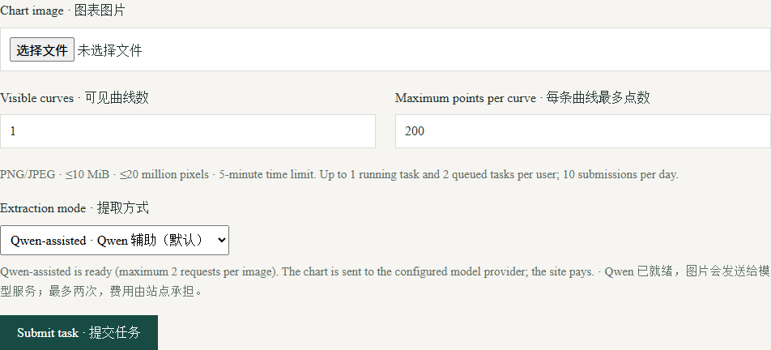
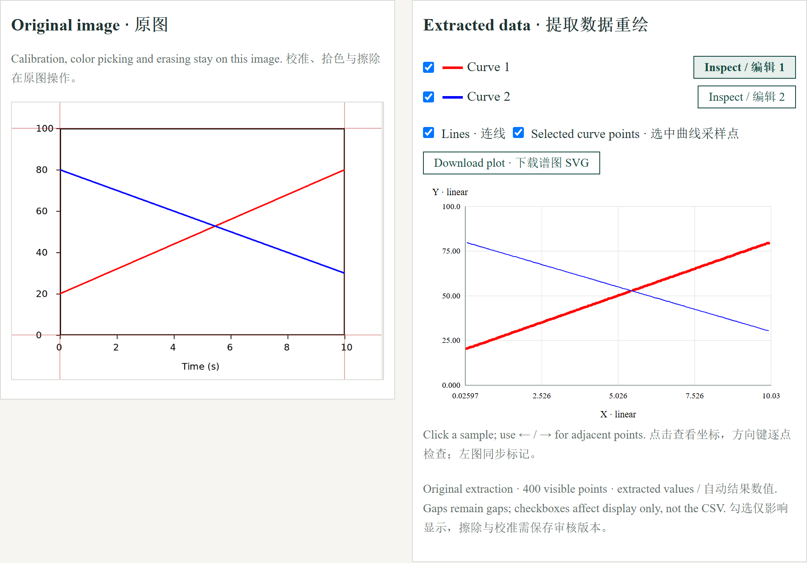

GBLine · Illustrated guide
Extract a chart, compare the redrawn data beside the original, then review calibration and curves before saving.
Screenshots use public teaching data or synthetic examples, without user accounts, task tokens or private research data. Select an image to enlarge it.
1. Access and task lifecycle
Sign in with an approved account. For a new account, register and verify your email; the owner must approve the application before computation is enabled.
All tools share per-account limits: one running task, two queued tasks and ten submissions per day. Results expire after 72 hours. Save results you need to keep.
2. Upload one chart
Choose a PNG/JPEG of a single chart with one X/Y axis pair. Enter the visible curve count and desired points per curve, then submit. Maximum 10 MiB and 20 million pixels.
The configured server-side Qwen service is shared by approved users; users do not enter API keys. Model suggestions still need visual review.

3. Compare original and redrawn curves
Open Review curves after processing. The original stays on the left and extracted numeric curves are redrawn on the right. Toggle individual curves, lines or selected-curve sample points; click points to inspect coordinates.
Inspect/Edit selects the active curve. Calibration, picking colors and erasing operate on the original image. Check both axes, units and linear/log scale before trusting coordinates.

4. Save a reviewed version and export
After calibration or erasing, save a human-reviewed version and inspect it again before exporting CSV. Original and reviewed versions remain distinguishable.
Display checkboxes change visibility, not exported CSV. Erased gaps remain gaps; a display-only SVG is not a substitute for saving a reviewed data version.
Troubleshooting
review_required means evidence is insufficient for certified numeric curves; do not assume a CSV was lost. Open the evidence and review controls. If no usable curve is detected, use a clearer crop or resubmit rather than inventing points.
If processing fails, retain the task ID and visible message. The five-minute task limit and shared account quota apply.